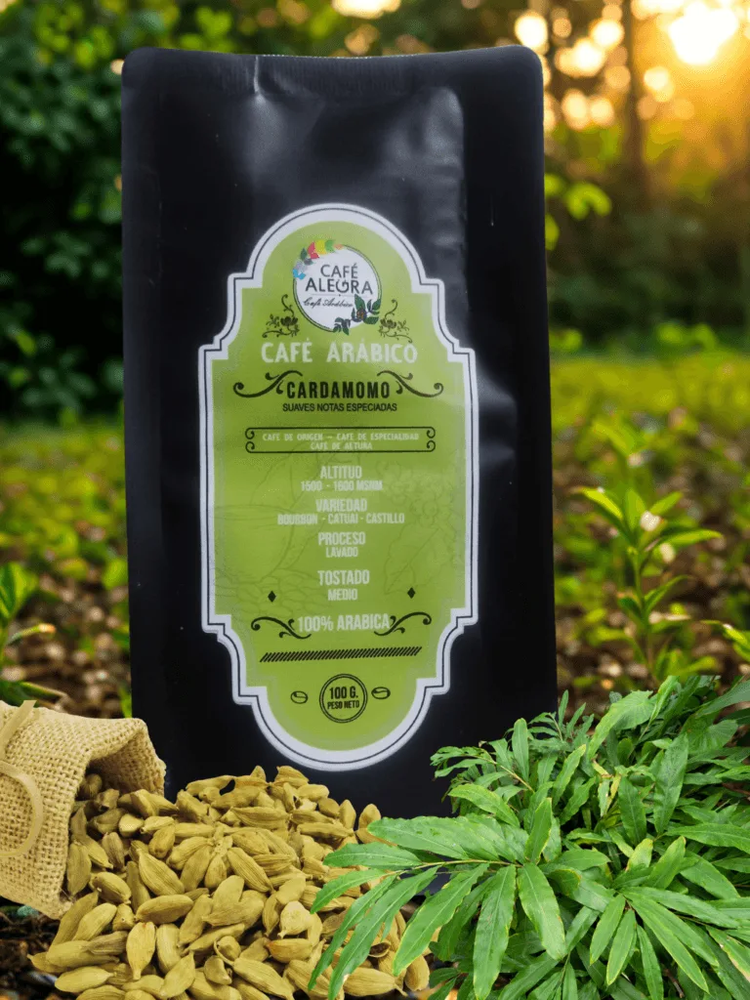

Sabores que trascienden en el tiempo
Café de trigo sin cafeína y café de especialidad de Guatemala, Bolivia y Chile. Tostado con dedicación en la VI Región y enviado a todo el país.
- Envío gratis desde $40.000
- Vegano · Sin azúcar
- Trigo sin cafeína
- Compra segura
Encuentra tu ritual
Un café para compartir en toda ocasión: descubre el café de especialidad y el café de trigo, para beber sin culpa.

Café de especialidad
Explorar
Café de trigo
Explorar
Packs de café de trigo
Explorar
Set de descubrimiento
ExplorarComplementos cafeteros →
Para empezar con buen pie
¿No sabes qué café elegir?
Basado en tus gustos y necesidades personales, descubre cuál de nuestras opciones de café de trigo sin cafeína y café de especialidad con cafeína es la mejor para ti.
Guatemala, Bolivia y Chile
En Café Alegra creemos que cada origen guarda un susurro de historia. Cada taza nos invita a viajar por lo mejor del café latinoamericano.
Guatemala
La tradición centenaria del café guatemalteco, donde los microclimas regalan perfiles complejos y profundos.
Bolivia
La frescura vibrante de un café cultivado en las montañas de Los Yungas.
Chile
Nuestro querido café de trigo, un tesoro patrimonial chileno que transformamos con amor y paciencia.


Ofrece el café más saludable de Chile
Una carta inclusiva y diferenciadora: café sin cafeína para quienes lo necesitan y café de especialidad para quienes buscan calidad gourmet.